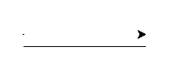
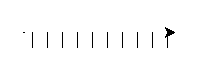
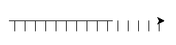
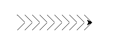

Du skal nå se teksten printet ut i IDLE, men kan vi ikke få skilpadden til å skrive den for oss?
Når vi skal skrive teksten med skilpadden, er det lettest å gjøre dette linje for linje, og det er derfor lettere om vi deler opp TEXT i en liste med enkeltlinjer. Til dette bruker vi TEXT.split('\n') som deler opp TEXT i flere linjer, og lagre denne i variabelen LINES.
LINES = TEXT.split('\n')
print(LINES)
Steg 2: Tegn med skilpadden
Vi ser at teksten over består av tegnene \ | / _. Det å lage disse hver for seg burde være en smal sak.
Hvis vi tenker oss at vi tegner hvert tegn i en tenkt, kvadratisk boks, med flere bokser ved siden av hverandre på hver linje, så bør det være mulig å tegne teksten tegn for tegn. For å holde kontroll på skilpadden bestemmer vi at hver gang skilpadden går inn i en ny boks, så må den peke mot høyre (øst), og være i hjørnet øverst til venstre. Når den er ferdig å tegne går den opp til hjørnet øverst til høyre, og peker til høyre. Den vil da stå klar til å tegne neste boks.
Tenk deg at boksene er i svart, og vi lager rød skrift. Da vil det se slik ut:
Sjekkliste
Vi begynner med å legge til størrelsen på tegnene, slik:
(Pass på at denne koden ligger i samme fil som TEXT-variabelen.)
SIZE = 15
SIZE er nå en variabel som inneholder størrelsen på boksen vår.
Vi lager en funksjon underline for å lage en understrek:
defunderline():
penup()
# Beveg skilpadden ned til bunnen av boksen
right(90)
forward(SIZE)
left(90)
# tegn understreken
pendown()
forward(SIZE)
penup()
# beveg skilpadden opp til hjørnet øverst til høyre
left(90)
forward(SIZE)
right(90)
Kjør koden, og se hva som skjer:
underline()
Hva om vi ønsker å lage 10 understreker?
for n in range(10):
underline()
Det skal se slik ut, hvis du du ikke har feil i koden:

Hva skjer hvis du endrer størrelsen på "boksen"? Prøv å endre på SIZE variabelen, og se hva som skjer. (Prøv for eksempel 5 og 50)
Steg 3: Enda et tegn
La oss prøve å lage tegnet |. Dette er rett og slett bare en rett strek som skal tegnes lodrett, midt i "boksen".
Sjekkliste
Vi lager funksjonen bar for å tegne |.
defbar():
penup()
# flytt til midten av boksen
forward(SIZE/2)
right(90)
# tegn en strek nedover
pendown()
forward(SIZE)
penup()
# flytt skilpadden til hjørnet øverst til høyre
left(180)
forward(SIZE)
right(90)
forward(SIZE/2)
Endre for-løkka vi lagde tidligere til å inneholde dette
for n in range(10):
bar()
Tegner skilpadden nå strekene på samme linje, slik som på bildet?

Steg 4: Skilpaddetegn på flere linjer
Det er jo litt kjedelig om alle tegnene bare skal være på en linje, så hva med å lage en
ny funksjon som lager en ny linje for oss?
For å kunne lage en ny linje må funksjonen vite hvor mange tegn den skal gå tilbake, vi må derfor deklarere funksjonen, med et parameter - en variabel som vi kan gi til funksjonen når vi skal kjøre den.
Denne koden går først ned til linjen under, så går den tilbake begynnelsen av linjen. Legg merke til at vi kaller forward med SIZE*lineLength som argumenter. lineLength er hvor mange tegn som er på linjen vi kom fra, og SIZE er hvor stort hvert tegn er - dermed må skilpadden flytte seg SIZE*lineLength piksler tilbake.
For å teste koden vår erstatter vi de tidligere for-løkkene med denne koden (pass på at dette blir plassert nederst i filen):
for i in range(10):
underline()
newline(10)
for i in range(15):
bar()
Legg merke til at newline blir fortalt hvor mange tegn som ble skrevet på linjen over, ikke hvor mange som skal bli skrevet på linjen under!
Dette skal se omtrent slik ut: 
Steg 5: Skilpadder på skråplanet
Nå har vi bare to tegn igjen å lage! Nemlig / og \. Disse tegnene må tegnes på skrå. Vi kan dermed ikke lenger tegne streker av lengde SIZE, vi er nødt til å regne litt.
Hvis du går på ungdomsskolen har du kanskje lært at sammenhengen mellom katetene og hypotenusen i et rettvinklet trekant er slik a² + b² = c², det er dermed mulig å regne ut diagonalen til firkanten.
Her skal du bare få svaret og slippe å regne det ut selv. Diagonalen i boksene våre vil være lik (2 * SIZE**2)**0.5. **-operatoren betyr "opphøyd i" slik at 3**2 blir 9. Når du opphøyer noe i 0.5, er det det samme som å ta kvadratrota av tallet. Dermed vil 9**0.5 bli 3.0 Dersom du lurer på hvordan dette fungerer kan du spørre en CodeMaster/veileder, eller mattelæreren din.
La oss endre på for-løkkene våre, og teste at koden blir korrekt (pass på at denne koden fremdeles ligger nederst).
length = 10for i in range(length):
backslash()
newline(length)
for i in range(length):
slash()
Denne gangen skal mønsteret bli slik: 
Nå er vi nesten ferdige! Bare litt igjen nå...
Steg 6: Skilpaddetekst
Vi trenger en funksjon for å skrive blanke tegn, og vi trenger å oversette fra teksttegn til funksjoner. La oss begynne med det enkleste.
Sjekkliste
For å skrive blanke tegn, så må vi, enkelt og greit, bare bevege oss til neste boks. Det gjør vi slik:
defblank():
forward(SIZE)
For å oversette fra teksttegn til funksjoner kommer vi til å bruke en dictionary. Dictionary betyr ordbok, og det er akkurat slik den fungerer. Vi "slår opp" noe i ordboka, og får noe tilbake. I vårt tilfelle skal vi slå opp på tegn, og få en funksjon tilbake igjen.
Nå kan vi slå opp på tegnet - og få funksjonen underline tilbake. Det kan vi for eksempel gjøre slik:
function = MOVES["_"]
Når vi så kaller function, vil den gjøre det samme som underline
function = MOVES["_"]
function()
Dersom vi ønsker å sjekke om et tegn er i ordboka, så kan vi sjekke det slik:
if"_"in MOVES:
function = MOVES["_"]
Nå kan vi lage en ny funksjon, create_text som lager teksten vår.
For å passe på at vi får plass til all teksten vår, ønsker vi å begynne øverst til venstre i vinduet vårt. Dette kan vi fikse ved hjelp av setx og sety som lar oss flytte skilpadden til den posisjonen vi ønsker.
defcreate_text():
penup()
setx(-window_width()/2)
sety(window_height()/2)
for line in LINES:
for char in line:
if char in MOVES:
move = MOVES[char]
else:
move = blank
move()
newline(len(line))
Som du kanskje ser, så har vi en for-løkke inni en annen for-løkke. Den ytterste (første) for-løkka går igjennom alle linjene i LINES, mens den innerste går igjennom alle tegnene i hver linje. Inni den innerste for-løkka sjekker vi om vi har en funksjon for tegnet, og hvis vi ikke har det så hopper vi bare over det ved å skrive et blankt tegn i stedenfor.
For å kjøre funksjonen vår, lager vi en main-funksjon som sørger for å sette riktig fart og riktig linjebredde.
Dersom du ønsker å kjøre koden uendelig mange ganger, kan du endre main-funksjonen til:
defmain():
shape("turtle")
while true:
speed(11)
width(5)
create_text()
sleep(5)
reset()
For at dette skal fungere må vi importere sleep-funksjonen. Dette gjør vi helt på toppen:
from turtle import *
from time import sleep
Skilpadden vil nå lage teksten, vente i fem sekunder (sleep(5)), og nullstille vinduet ved hjelp av reset() før den starter på nytt.
Utfordringer
Dersom du går tilbake til ordboka vi deklarerte i MOVES-konstanten vil du se at vi "jukset" ved å tegne paranteser - ( og ) som |. Vi "jukset" også ved å bare tegne et blankt tegn istedenfor komma og apostrof - , og '.
Prøv å lage disse på egenhånd! , og ' er lettest, for disse kan tegnes som rette streker. For å kunne lage ( og ), må du bruke det du har lært om sirkler!
Lag kode for hvert tegn i en egen funksjon, og husk og oppdatere MOVES. For eksempel, hvis du lagde en komma-funksjon så må du endre
",": blank
til
",": comma,
der comma er navnet på funksjonen din.
Hei der!
Ser ut som dette er ditt første besøk, vil du ha en omvisning?